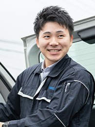
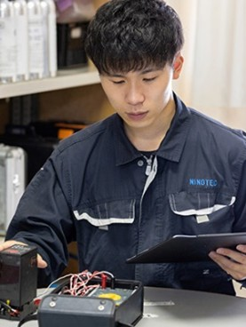
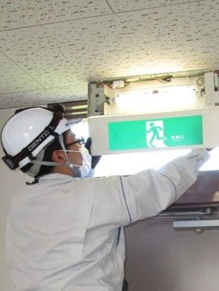
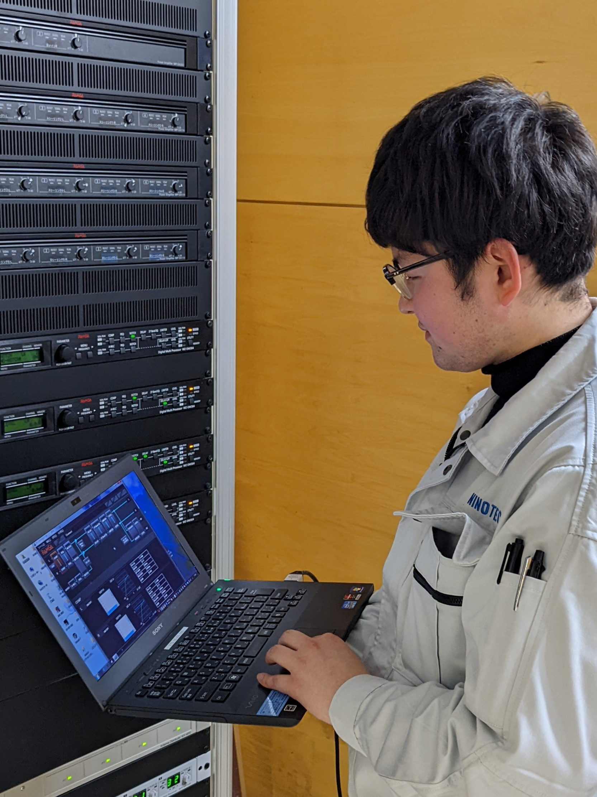
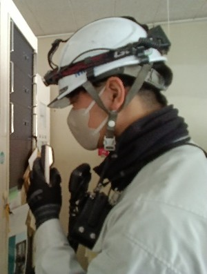
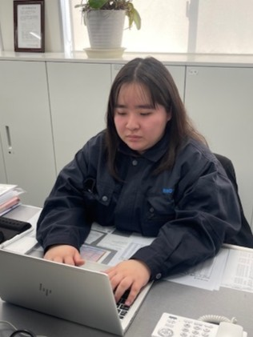
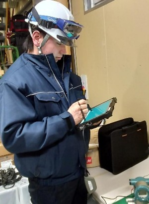
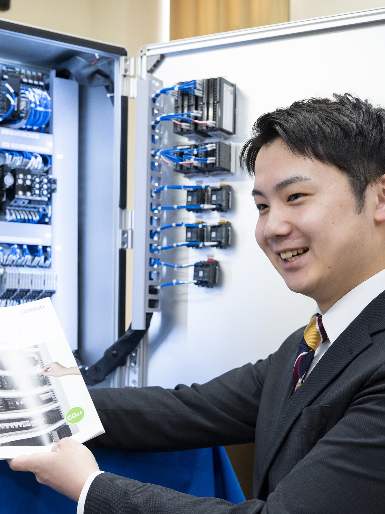
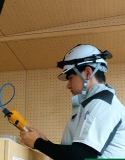
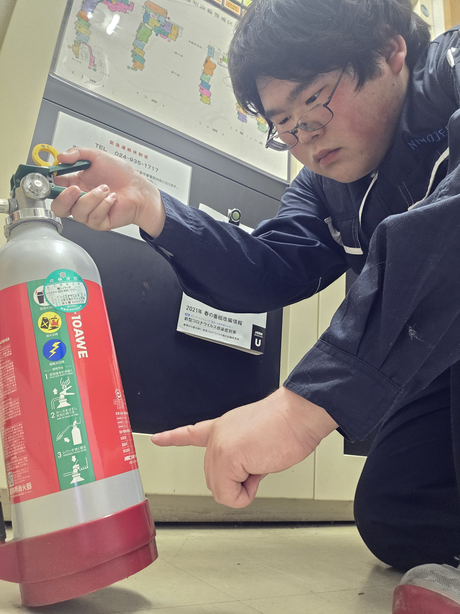

既にお取引のあるお客様を訪問し、電話設備やカメラの更新・交換のご相談にお応えしています。数年前までは製品知識が足りていないことに不安がありましたが、現場経験や各種メーカー研修で知識を深めることができ、今では自信をもってお客様へ製品の提案ができています。
先輩たちの仕事とリアルな声をご紹介します

既にお取引のあるお客様を訪問し、電話設備やカメラの更新・交換のご相談にお応えしています。数年前までは製品知識が足りていないことに不安がありましたが、現場経験や各種メーカー研修で知識を深めることができ、今では自信をもってお客様へ製品の提案ができています。

浄水場などの水道設備、民間の工場において水質や水位、圧力などを測定する装置のメンテナンスを行っています。お取引のあるお客様の数が多く、県内市町村のあちこちの設備にニノテックが関わっています。

消防設備の点検、工事を行っています。消火器や誘導灯など、案外身近にある設備に関わっており、日々お客様の「もしも」に備えて仕事をしています。 仕事で電気関係の知識などを使うので、電気工学などテクノアカデミー郡山で学んだことが生かされています。

弱電分野の設備工事を行っています。普段何気なく使っているネットワークやテレビの設備工事に携われていることにとてもやりがいを感じています。会社が資格取得支援制度でスキルアップのサポートをしてくれるので、モチベーションアップにつながっています。

消火器や自動火災報知設備などの消防設備が実際に使用される際、安全に避難・消火活動が行えるよう定期点検業務を行っています。日常的に電気関係の知識を扱うことが多く、平工業高校で学んだことが実践で活きています。

消火器などの消防設備の点検をした際、お客様に出す報告書や見積書の作成、電話対応や荷物の検品作業などの事務作業を行っています。報告書や見積書を作成する際も専門的な知識が必要ですが、平工業高校で学んできたことが多く、素早く内容を理解することができています。

工場や水道施設などのさまざまな配管に取り付けられている圧力計、水位計、流量計などの点検業務を行っています。仕事のほとんどがこれまで知らなかった分野で、覚えることもたくさんありますが、その中で平工業高校で学んだ知識が活かされる場面もあります。自分の持っている知識と新しい知識が繋がっていくのがとても楽しく、やりがいを感じています。

工場の生産ラインを自動化するためのFA機器の提案と販売を担当しています。初めて聞く商品名や用語には苦労することもありますが、クイックレスポンスを心がけて日々奮闘しています。ニノテックは明るく親しみやすい職場環境が魅力で、疑問に思ったことはすぐに相談できる環境が整っています。

工場やオフィスのネットワーク環境の構築や、電話設備の設置工事を行っています。仕事を行う上で電気工事の資格が必要になるので、高校で学んだ電気関係の知識が仕事に生かされています。
情報通信部で営業事務をしています。主な仕事は見積依頼の処理や仕入れ先への問い合わせなど多岐に渡りますが、日々迅速かつ正確な業務を心掛けています。ニノテックは産休や育休が取りやすく、復帰後も働きやすい環境が整っていますので、女性にとっても働きやすい会社だと思います。既婚者の女性の先輩もたくさん活躍されています。

工場やオフィス等幅広い施設の消防設備の点検・施工メンテナンスを行っています。万が一火災が起きても設備に不備なく避難・消火活動を行えるよう日々の業務に取り組み、お客様には安心していられる環境作りに迅速かつ正確な対応を行っています。 消防設備の専門用語や設備の種類、仕組みについて学ぶことが多く覚えることに苦労することがありますが日々の点検・工事を通して理解できるように分かりやすく教えてくれる先輩方がいるためとても心強いです。高校で学んだ電気関係の知識を仕事で実践して活かせています。

消火器や誘導灯をはじめ、さまざまな消防設備の点検・確認業務を日々行っています。覚えることが多く、最初はわからないことや戸惑う場面もありますが、一つひとつ丁寧に取り組むことで着実にスキルが身についていく実感があります。ニノテックには気さくで親しみやすい先輩や同僚が多く、困ったときや疑問が生じたときでも気軽に声をかけやすい雰囲気があります。「こんなこと聞いていいのかな」と躊躇することなく相談できる環境が整っているので、わからないことをそのままにせず、その場でしっかり解決できるのが大きな安心感につながっています。
該当する社員が見つかりませんでした。